United Flea Markets
Market Analysis and Vendor Segmentation
UFM sought help positioning their market network for a post-COVID rebound in both vendor presence and shopper visitation.

The insight
Longitudinal research into vendor and shopper psychographics revealed a distinct typology that informed segmentation of both groups – and that interaction with customers, not simply making money or getting rid of excess stuff, was the primary motivator for the most numerous and reliable vendor groups.
The answer
A campaign that addressed the non-cost-related motivators that drove an actual majority of flea market vendors and shoppers alike.
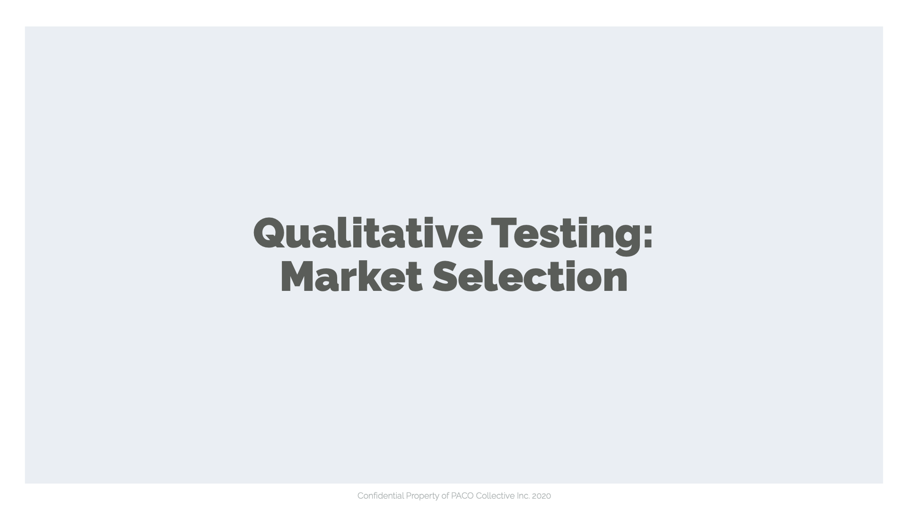
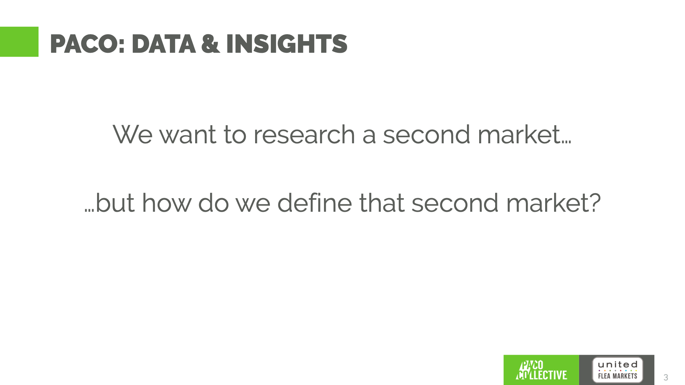
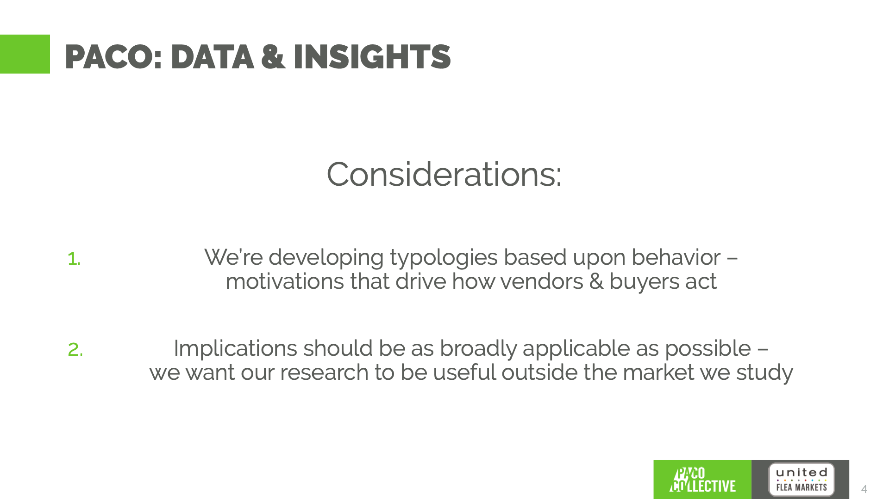
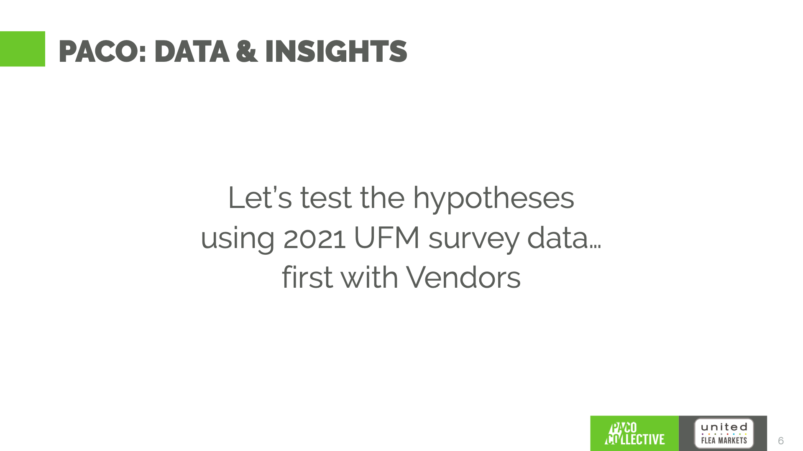
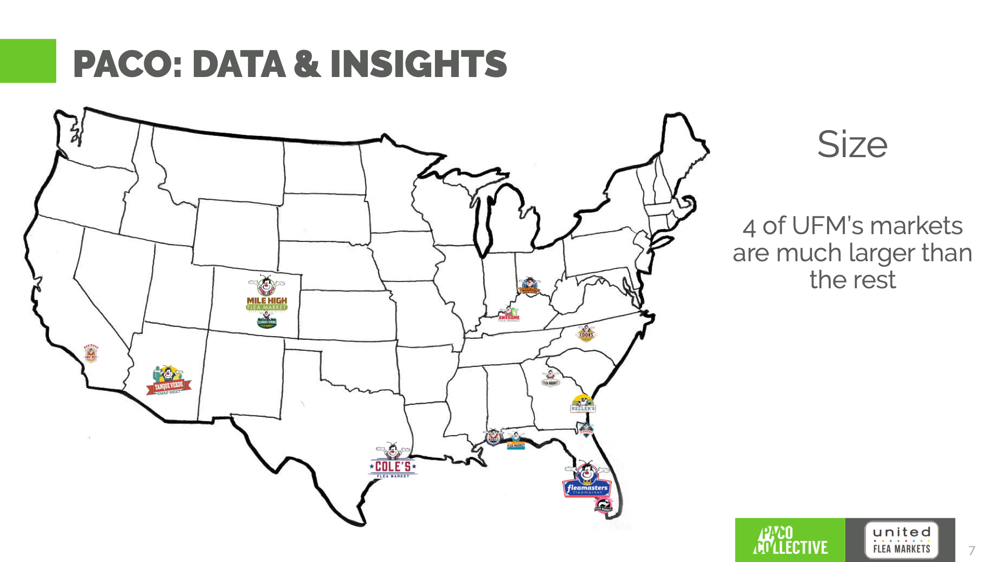
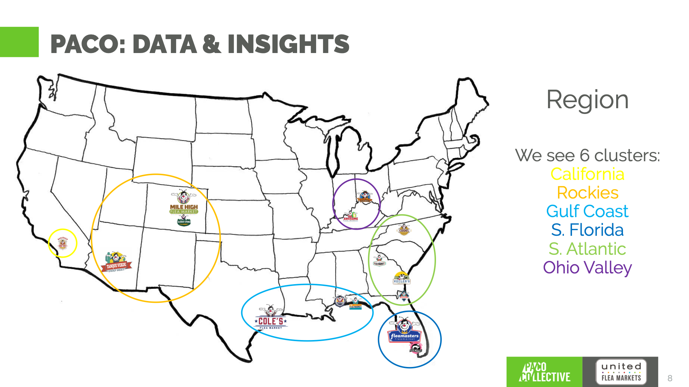
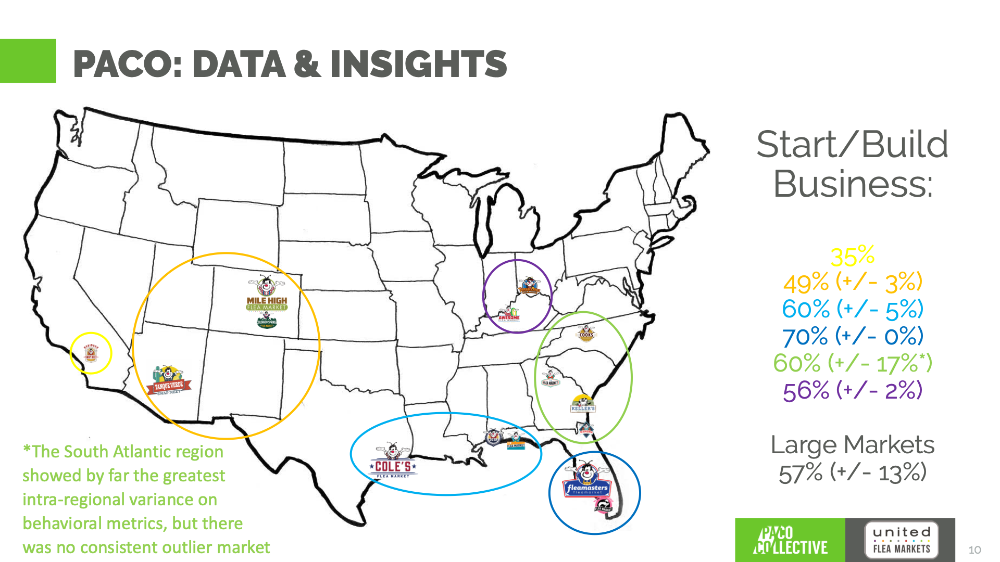
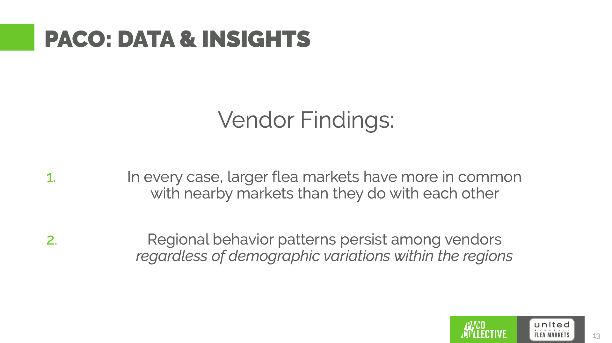
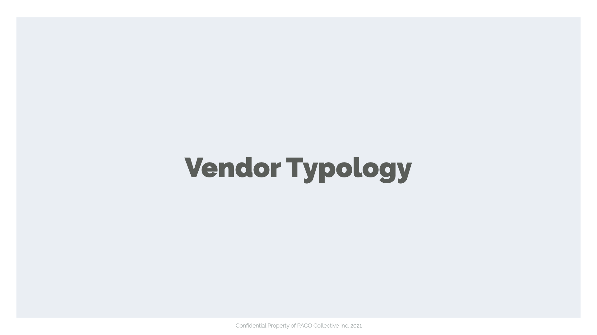
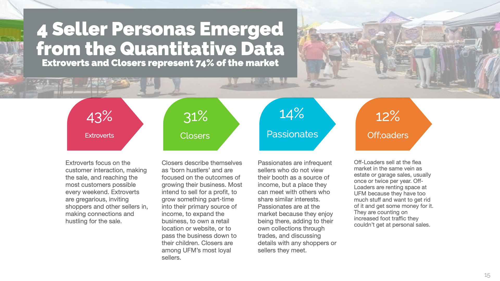
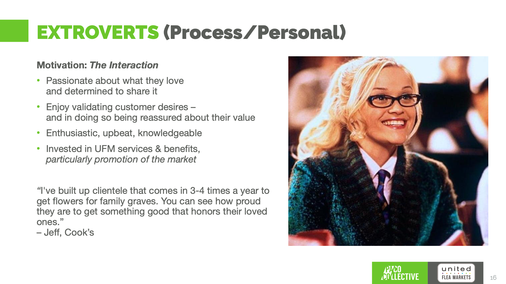
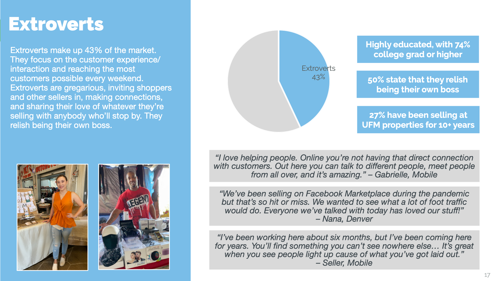
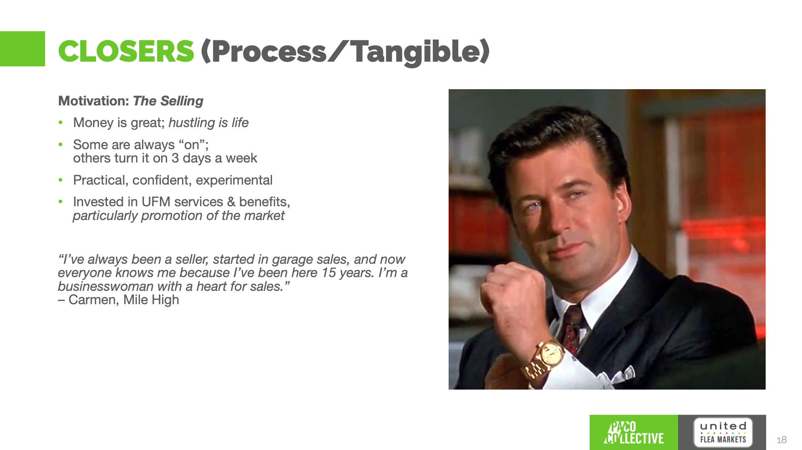
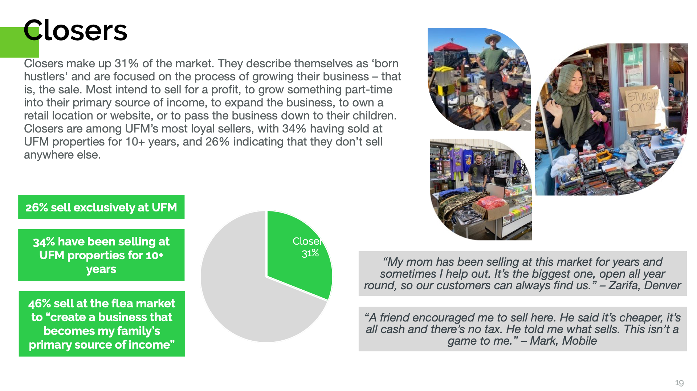
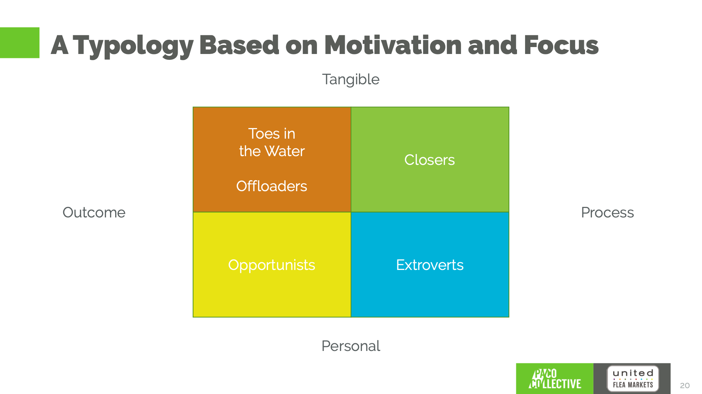
20 images. Scroll sideways.